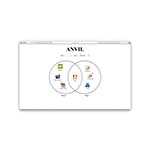
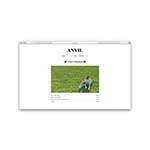
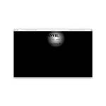
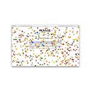

{
"UUID": "ee703cb7-d713-4536-9537-46906815f45d",
"Title": "ANVIL",
"ShortDescription": "Website for a direction duo",
"Year": 2024,
"FeaturedWork": "TRUE",
"URL": "anvil",
"Modality": [
"Digital"
],
"Medium": [
"Browser",
"Graphic design"
],
"Tools": [
"HTML/CSS",
"JavaScript",
"Photoshop"
],
"Object": [
"Website"
],
"Collaborators": [
"Tank Buzadi",
"Toby Sherman"
],
"Keywords": [
"Commercial/client",
"Culture",
"Web"
]
}Web portfolio for ANVIL, a directing duo from Toronto, Ontario.
Fun highlights from this project include:
Co-creative directed alongside Toby and Tank. Developed by me. Additional graphics by me as well.
Visit the site at anvil.cool.
| * | Title | Size (bytes) | View |
|---|---|---|---|
 | Anvil homepage | 70,685 | |
 | Anvil video direction | 129,464 | |
 | Anvil dark mode | 40,988 | |
 | Anvil 404 page | 145,727 |